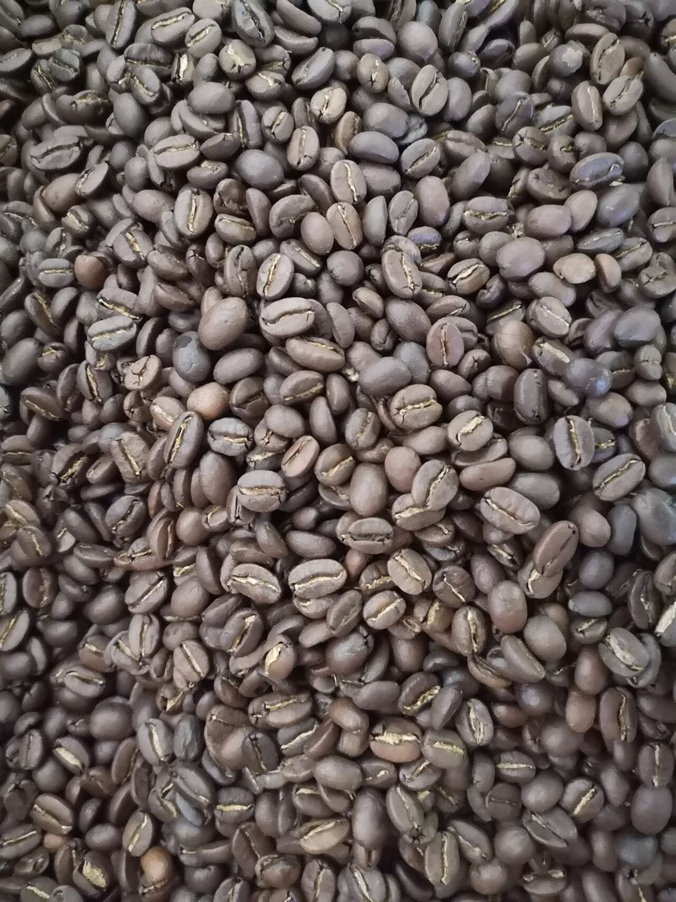

店のこと
針の部位を、順に読む
確認できたお店の情報は、所在地とInstagramのみです。詳しいことは準備中です。
この図について
制作側の連想です
ミシン針の図は、制作側の連想で選んだ題材です。お店の理念・由来とは無関係で、実際のミシン針の仕様を示すものでもありません。
凡例
六つの部位
- 1シャンク針の頭にあたる、太めの部分。ミシンに取り付ける側で、平らな面があります。
- 2ブレード(胴)シャンクから針先へ伸びる、まっすぐで細い軸の部分。
- 3長溝胴の片側に縦に走る、糸が沿うための溝。
- 4短溝長溝の反対側、めどの上あたりにある短いくぼみ。
- 5めど糸を通すための小さな穴。
- 6針先いちばん先の、とがった部分。
ギャラリー(イメージ)
コーヒー豆の写真



写真はイメージです。お店のものではありません。
ご案内
お店のこと(確認できたものだけ)
| 所在地 | 〒802-0077 福岡県北九州市小倉北区馬借1丁目5-17 |
|---|---|
| 電話 | 準備中 |
| 営業時間 | 準備中 |
| 定休日 | 準備中 |
| ご予約 | 準備中 |
| 駐車場 | 準備中 |
| SNS | Instagram @secondfitzroycoffee |